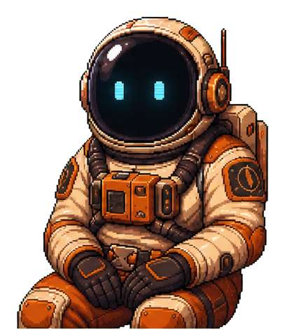

THE MORROW CREEK GAZETTE
端末を横向きにしてください
このゲームは横画面で遊ぶように作られています。
LOADING 0%
12 NIGHTS PROTOTYPE
どの日から再開しますか？
到達済みの日の新聞画面から再開します。
CG GALLERY
SELECT A MEMORY
右のリストから
閲覧する項目を選択してください
閲覧する項目を選択してください
ロウ
マーラ
ジューン
レイジ
カイ

テオ
エルシー
レクター
0:000:00
VOLALL SHUFFLE
▼
SMOKEMOKE LAB
調合
完成イメージ
素材を選択
BASE
ACCENT
ACCENT
—
ベースを1つ
アクセントを2つ
フレーバープロファイル
素材を準備しています…
セーブ完了！